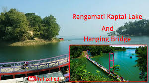

Welcome to Rangamati

Rangamati (Bengali: রাঙামাটি Chakma:𑄢𑄋𑄟𑄖𑄨) is a district in south-eastern Bangladesh. It is a part of the Chittagong Division[2] and the town of Rangamati serves as the headquarters of the district. Area-wise, Rangamati is the largest district of the country. Rangamati was a contesting ground for the kings of Tripura and Arakan. This region came under the Mughal Empire after the Muslim invasion in 1566.[3] In 1737 Sher Mosta Khan, a tribal leader, took refuge with the Mughals. After this the Chakma settlement began along with various other settlements of varying ethnicity.[3] From 1760 to 1761, this land was leased to the East India Company.[3]
Spots in Rangamati
-
 The total population is 508,182 according to 2005 census of which tribal 52% and non-tribal 48%. The number of males is 287,060 and the females are 238,043 (Census 2001). The density of population is 83 per square kilometre (Census 2001). The number of household is 103,974 having the household size 4.8 (Census 2001). The total population is divided into Bangalees and eleven tribes (ethnic minorities): Chakma, Marma, Tanchangya, Tripura, Pankua, Lushai, Khiang, Murang, Rakhain, Chak, Bowm,Khumi.[4]
Location:
Located 12 km south of Bazar Town and 6 km from the Kalatali beach by the hill.
Area: 1,729 hectares.
Getting there:
From Kalatali stand, it is only 15-minute ride to entry; if you take a taxi or chandergari (local transport). You can also rent a car from Bazar.
Outstanding Features:
1)Beautiful-waterfall .
2)HimchariNationalPark .
3)BrokenHill .
4) Christmas Tree .
The total population is 508,182 according to 2005 census of which tribal 52% and non-tribal 48%. The number of males is 287,060 and the females are 238,043 (Census 2001). The density of population is 83 per square kilometre (Census 2001). The number of household is 103,974 having the household size 4.8 (Census 2001). The total population is divided into Bangalees and eleven tribes (ethnic minorities): Chakma, Marma, Tanchangya, Tripura, Pankua, Lushai, Khiang, Murang, Rakhain, Chak, Bowm,Khumi.[4]
Location:
Located 12 km south of Bazar Town and 6 km from the Kalatali beach by the hill.
Area: 1,729 hectares.
Getting there:
From Kalatali stand, it is only 15-minute ride to entry; if you take a taxi or chandergari (local transport). You can also rent a car from Bazar.
Outstanding Features:
1)Beautiful-waterfall .
2)HimchariNationalPark .
3)BrokenHill .
4) Christmas Tree .
- Tribal population : (as per census of 2005 ): Chakma-186,395, Marma-44,727, Tanchanga-18,607, Tripura-6,697, Pankho- 2,118, Bowm-1,053, khyang- 791, Lusai- 217, Chak- 177, Rakhain-70, Khumi- 50, Gurkha-03, Etc.-174[4] As per 1991 census, the religious break up of the population of the district were: Buddhist 53.83%,Muslim 39.28%, Hindu 5.62% and Christian 1.12%. Religious institutions Pagoda 1230, Mosque 1059, Temple 65, Church 16. Genderwise, male constituted 53.59% and female constituted 46.41% of the population.[4]
-  Rangamati is located in the Chittagong Division. It is bordered by the Tripura state of India to the north, Bandarban District to the south, Mizoram State of India and Chin State of Myanmar to the east, and Khagrachari and Chittagong Districts to the west. Rangamati is the only district in Bangladesh with international borders with two countries: India and Myanmar. The area of the district is 6116 km2 of which 1292 km2 is riverine and 4825 km2 is under forest vegetation
Sajek valley
The name of Sajek Valley came from Sajek River that originates from Karnafuli river. Sajek river is works as a border between Bangladesh and India The native people of Sajek valley are ethnic minorities. Among them Chakma, Marma, Tripura, Pankua, Lushai and Sagma are mentionable. Women seem to be more involved in economic activities here. Tea stalls, food joints and roadside marketplaces are dominated by women. People in general are gentle, welcoming and friendly. Picking fruits and vegetables early in the morning is a major trade here. They are not fluent in Bengali but the young population speak English confidently. Sajek was unexplored for a long time and recently it emerged as a tourist spot for it’s outstanding natural beauty. The place does not have modern tourist facilities but tourists mostly enjoy the nature and culture of the place. Though the valley is in Rangamati but to tourists prefer the route from Kagrachari to Sajek valley through Dighinala Bazaar, Bagaihat Bazaar and Machalong Haat. Major transport is Chander Gari which is like a four wheel jeep. Tourists can also go to Sajek from Rangamati by engine vessel. It takes 5–6 hours in that route.[1]